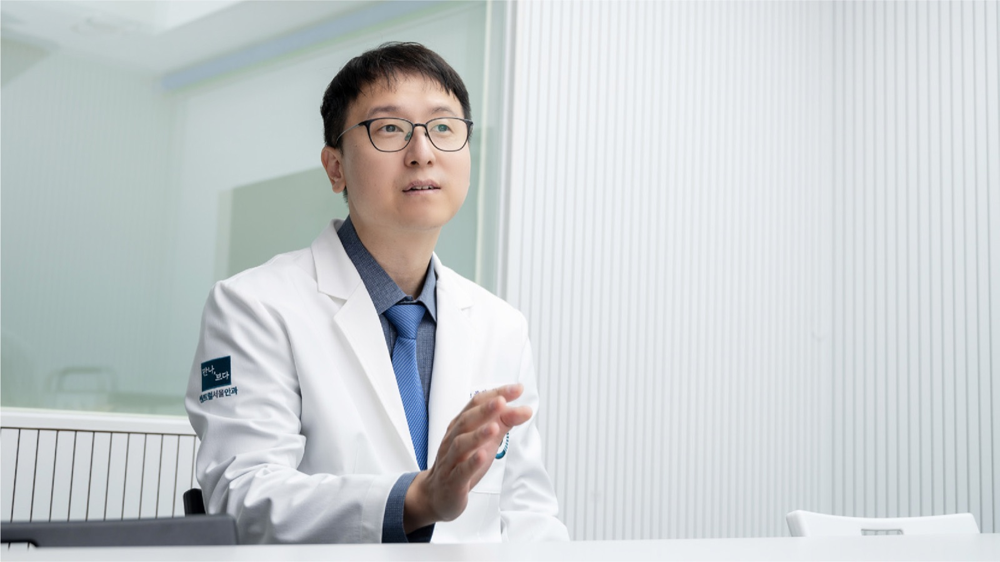
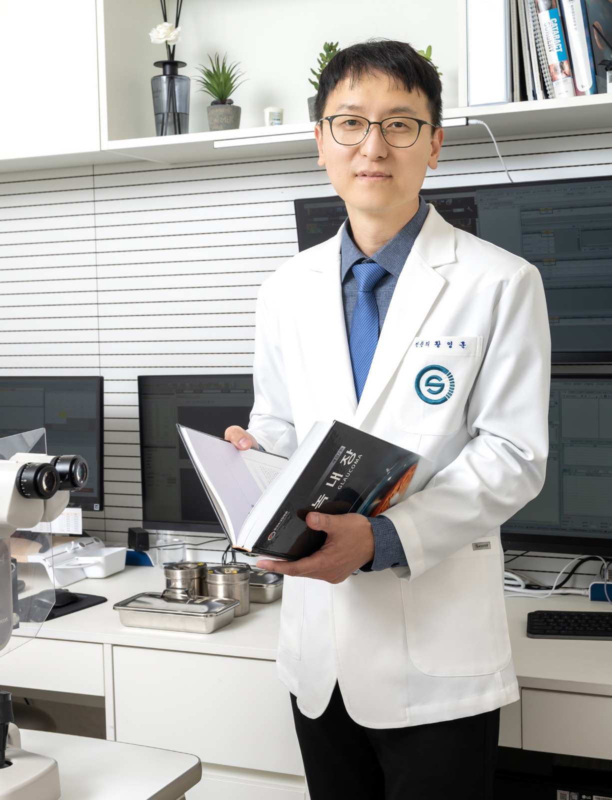

2023년 3월 센트럴서울안과 녹내장 클리닉에 새롭게 부임한 황영훈 원장을 만났다. 인터뷰 전 미리 얻은 정보에 따르면 ‘연구를 즐긴다’라고 했다. 혹시 이야기가 지루하게 흘러가면 어떡하지? 살짝 고민이 되었지만, 그 고민은 기우에 불과했다. 황영훈 원장은 연구 이야기를 할 때 그 누구보다 진지했고, 그 어느 때보다 행복해했다. 마치 세상의 모든 것에 호기심을 느끼는 아이의 눈빛처럼 반짝거렸다.
자연을 좋아하던 소년
황영훈 원장은 부산에서 자랐다. 백양산이라는 드넓은 자연은 소년의 놀이터였다. 편백, 삼나무 숲길 등 뛰어난 전망보다 백양산의 나무, 들풀, 꽃, 벌레, 곤충, 동물에게 더 큰 관심을 뒀다.
당시만 해도 산은 제게 가장 큰 놀이동산이었습니다. 그 자연 속에 생활하는 것을 좋아했습니다. 훗날 ‘동물과 관련된 일을 해야지’ 하고 막연하게 꿈꿨던 것 같습니다. 수의대 아니면 생물학이 하고 싶었던 것이죠!
황영훈 원장
황영훈 원장의 할아버지는 좋은 친구이자 스승이었다. 함께 백양산을 누볐고, 모르는 게 있으면 식물도감을 찾아 일일이 알려주곤 했다. 때론 엄했지만 자상했고, 매서운 듯했지만 너그러웠다. 모르는 것이 있으면 늘 해결책을 찾고, 새로운 것을 알려주던 할아버지 때문일까, 황영훈 원장은 공부가 재밌다고 했다. 그렇게 자연에서 뛰어놀던 소년은 공부가 가장 재미있는 청소년이 된다.
교수를 꿈꾸며 의과대학에 진학
황영훈 원장의 꿈은 캠퍼스 탐방을 하면서 더 선명해졌다. “포항공대에서 진행하는 캠프에 가서 교수님들 이력을 보는데 의과대학 출신의 교수님도 있었습니다. 일반적인 진료가 아닌 기초 연구에 몰두하는 의사 출신의 교수님을 보면서 깊은 영감을 받았습니다. 그리고 자신의 열정을 공부와 연구에 바칠 수 있는 ‘교수’라는 직업에 대한 확신을 갖게 되었어요.”
사실, 의과대학에 진학하겠다는 꿈은 없었다. 그저 좋아하는 범주 내에서 교수가 되면 원 없이 공부할 수 있겠다고 생각한 것뿐이다. 황영훈 원장에게 의과대학 진학을 권유한 건 아버지였다. 의과대학 신입생 시절 ‘뇌’와 사랑에 빠졌다. 신경외과, 신경과, 정신과까지 고려했지만, ‘과연 잘할 수 있을까?’라는 고민에 부딪혔다. ‘신경’이라는 부분을 도저히 포기할 수 없을 즈음 안과 수업을 듣게 되었고 시신경과 연결된 ‘녹내장’ 파트에 매료되었다. 연구, 진료, 수술까지 모든 범위를 다양하게 할 수 있을 거로 확신했다.
행복한 군의관 시절
황영훈 원장은 전공의와 전문의를 거치는 4년 내내 병원에서 살았다. 주말이면 병원 문을 나설 만도 한데, 그에게는 그보다 더 즐거운 연구가 기다리고 있었다. 진료가 없는 주말, 병원 책상에 앉아 오롯이 하는 연구 시간은 천국이었다. 전공의 때 쓴 논문만 10개. 펠로 과정 일 년을 하며 전문성을 키운 후 국군수도병원에 군의관으로 입대했다.
국군수도병원은 시설과 장비가 좋고 연구할 소재가 무궁무진하답니다. 진료 외에 연구에 집중할 수 있는 시간도 많았고, 연구하고 싶은 주제를 마음껏 정할 수 있었지요. 군의관으로 근무하며 정말 행복했습니다.
황영훈 원장
행복한 군의관 시절을 보내며 몰입의 즐거움까지 알게 된 황영훈 원장은 제대 후 건양의대 김안과병원에 둥지를 텄다. 몇 년간의 연구가 환자의 실제 사례와 접목되니 더 큰 시너지가 발휘됐다.
불혹, 꿈을 이룬 후 다시 마주한 마음
병원이라는 ‘현장’에서 환자를 만나면서도 ‘교수’라는 꿈은 포기할 수 없었다. 기회가 여러 차례 있었지만 연이 닿지 않다가 마흔 살이 넘어 교수라는 꿈을 이뤘다. “사실 2020년에 번아웃이 심각하게 왔습니다. 모든 것을 다 그만두고 쉬고 싶었습니다. 그때 충남대학교에서 제안이 왔고 병원에서 대학교수로 자리를 이동하게 되었습니다.”
꿈꾸는 일에는 늦음이 없는 것처럼 꿈을 이루는 것도 마찬가지다. 불혹이라는 나이에 소년이 꿈꾸던 교수가 되었다. “2년 정도 서울에서 충남대학교가 있는 대전까지 출퇴근했습니다. 교수라는 자리에서 교육·연구·진료하는 과정도 좋았지만, 내가 원하는 게 무엇인지 다시 원점에서 생각할 수 있는 계기가 되었습니다.”
개원 병원에서 진료와 연구를 병행
센트럴서울안과에 부임하게 된 계기를 들었다. “어떤 역할을 기대하기보다 제가 하고 싶은 것을 할 수 있도록 지원해 주셨습니다. 녹내장의 경우 학교를 벗어나면 계속해서 녹내장 진료와 연구를 함께 하는 건 어렵습니다. 센트럴서울안과는 개원 병원이지만, 연구를 지속해서 할 수 있도록 지원한다는 점이 마음을 움직였습니다. 실제로 제 일정표에는 ‘연구’ 시간이 별도로 있고 연구할 수 있는 공간도 마련해 주셨습니다.”
녹내장 관련 논문 130여 편을 비롯해 녹내장의 교재라 불리는 《녹내장의 모든 것》을 집필하며 보낸 지난 시간이 황영훈 원장에게는 추억이다.

어떤 노래를 들으면 그 시절의 감정이나 사건들이 떠오르는 것처럼, 제게 연구 논문 한 편 한 편은 노래와 같은 것입니다. 어떤 논문은 아내와 연애하며 썼고, 또 어떤 논문은 갓난아이를 안고 집필하기도 했습니다.
황영훈 원장
연구에도 추억이 떠오른다는 이야기에 말없이 한참을 바라봤다. 황영훈 원장은 진정 연구를 즐기고 배움을 즐기는 사람이다.
센트럴서울안과, 연구로 도약 발판
센트럴서울안과는 지난 10년간 양적 성장을 이뤘다. 병원이 다시 도약하기 위해서 ‘연구’가 필요하다고 경영진이 판단한 것이다. 대학병원이 아닌 개원 병원이지만 꾸준히 연구할 수 있는 환경을 마련하고, 연구 결과를 내부에서만 공유하는 것이 아니라 <녹내장 이야기> 매거진을 제작해 동료 안과의사에게 배포도 시작했다. 녹내장 치료의 발전을 위해 선택한 일이다.
마지막으로 녹내장 환자분에게 전하고 싶은 이야기가 있다고 운을 뗐다.
많은 사람이 살면서 후회되는 것 중 하나가 ‘걱정을 너무 많이 한 것’이라고 합니다. 녹내장도 마찬가지입니다. 녹내장은 종류, 위험요인, 정도, 진행 상태에 따라 경과가 다릅니다. 자신의 상태를 적극적으로 이해하고 바라볼 줄 알아야 합니다. 걱정을 내려 두고 안과의사와 함께 현명하게 녹내장을 극복하길 기원합니다.
황영훈 원장